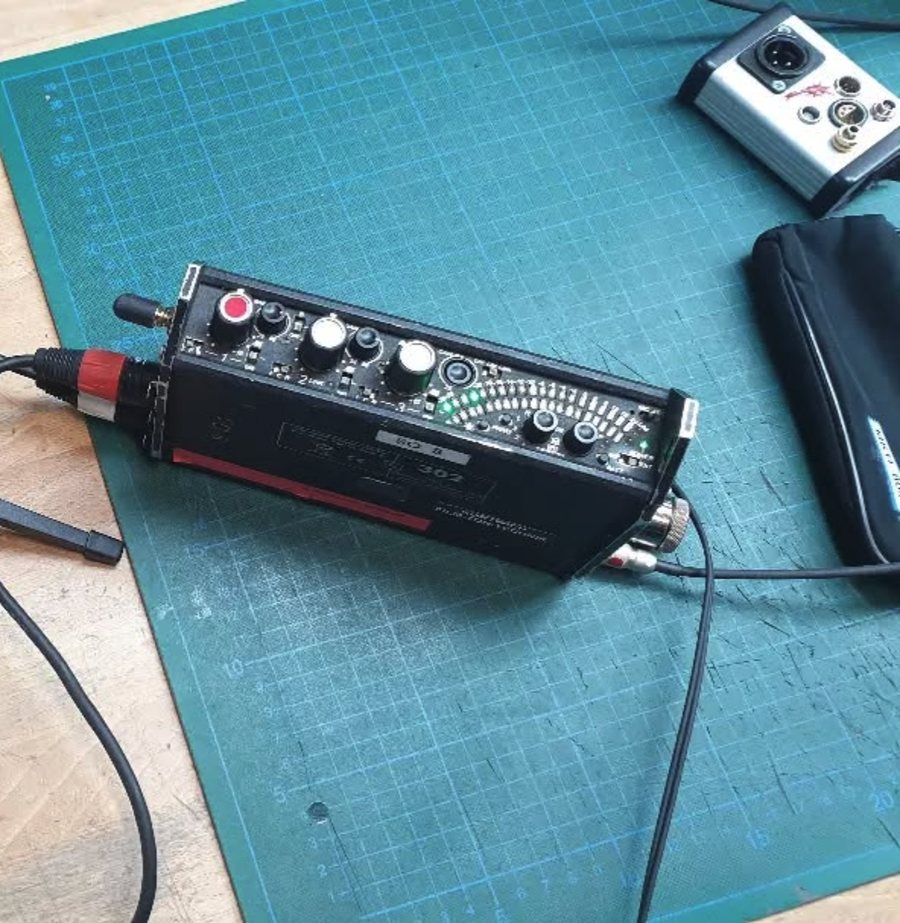
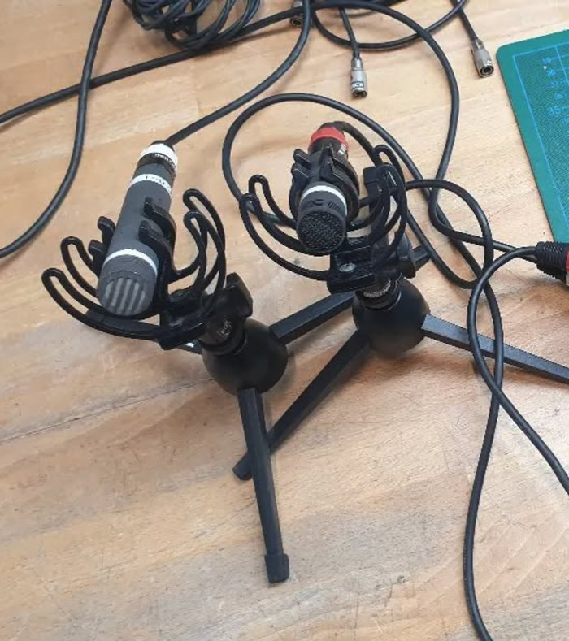

Sound services and coordination: field recording, foley, dialogue, spatial audio and full post-production, with one point of contact. StudioAgency

Sound pieces exploring spatial perception, materiality and environmental recording. SoundArt
Sound Production Studio and Agency
commercial work, specialist coordination, and artistic exploration
Studio / Agency
Sound Services & Coordination
I work as your sound partner, either handling production in-house or assembling the right team of specialists from my network. Whether you need field recording, foley, dialogue editing, spatial audio, or full post-production, you get one point of contact and consistent creative oversight from brief to delivery.
Similar to booking camera operators or models through an agency, but for sound.
Services
- Set recording
- Sound design
- Audio post-production
- Dolby 5.1 mixing
- Vinyl & music mastering
- Ambisonics recording
- Scoring & composition
- Sound supervision
work
sound art
Experimental Work
Alongside client work, I develop sound pieces exploring spatial perception, materiality, and environmental recording. This artistic practice informs and deepens the creative thinking behind all my work.
Releases
Discography
about
Agency: Sound Production & Creative Coordination
I supervise sound from concept through delivery, whether that means handling full post-production myself or assembling and directing a team of specialists.
For larger projects or those requiring niche expertise, I coordinate trusted freelancers across all areas of sound production, maintaining creative and technical oversight throughout. You get one point of contact, consistent quality control, and access to professionals I trust across every discipline.
How it works
- 01Understanding your needsWe discuss your project scope, timeline, format requirements and creative goals.
- 02Assembling the right teamI handle production in-house or bring in specialists from my network (foley artists, field recordists, dialogue editors, re-recording mixers, spatial audio experts), depending on what the project needs.
- 03Creative & technical oversightI keep responsibility for the sonic outcome: consistency, quality, and sound that serves your vision. You work with me directly throughout.
- 04DeliveryTurnkey sound from concept to final file, from a single deliverable to multi-format packages for international distribution.
When to use the agency service
- Projects requiring specialised skills beyond standard post-production (location recording, foley stages, ADR facilities)
- Large-scale campaigns needing multiple sound professionals working simultaneously
- Tight turnarounds where additional capacity is needed
- Technical formats requiring niche expertise (immersive audio, game audio, installation sound)